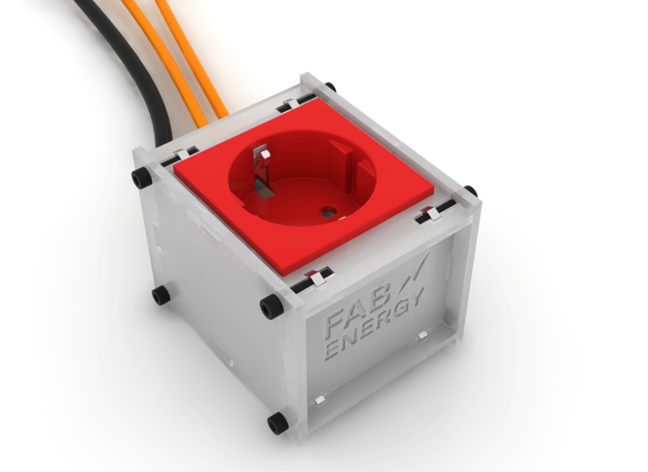

For the Computer Aided Design assignment I model the press fit box system that's going to house the energy meter nodes I'm currently working for my final project.
The Final Result
The Process
The modeling has been done in Rhino 3D and the rendering has benn done in V-RAY for Rhino. This software are quite expensive unless you use it everyday. However there's a lot of free alternatives for modeling like Blender, Sketch Up and OpenSCAD, or POV Ray for rendering
